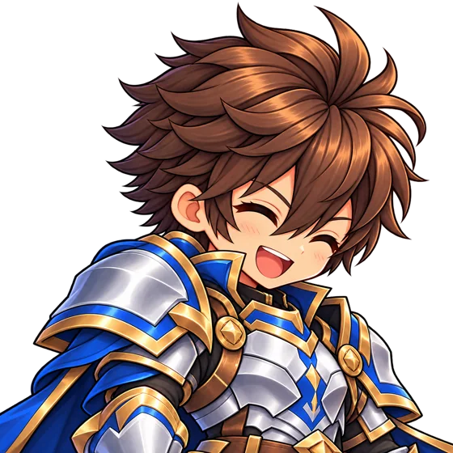
Cavaleiro
Sobrevivência
Maior Vida e Defesa do jogo; sacrifica mobilidade para cumprir o papel de linha de frente.
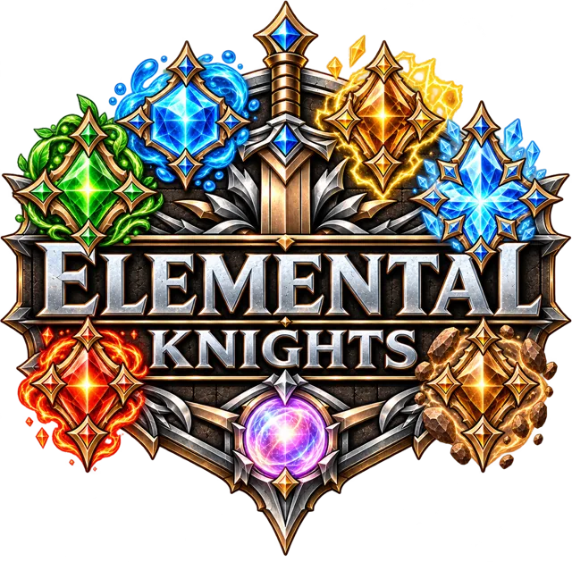
Escolha sua Classe. Domine os seis Elementos.
Monte a estratégia que vence cada batalha.
O que há de novo
Um novo Capítulo, um novo reino, o Grimório renovado e muito mais para fazer entre uma batalha e outra.
 Novo capítulo
Novo capítulo
O Capítulo 3 leva os heróis ao subsolo, onde as pedras flutuam e o Guardião do Núcleo desperta.
 Grimório
Grimório
61 criaturas, cada uma com sua história. As que você nunca enfrentou aparecem só como sombra.
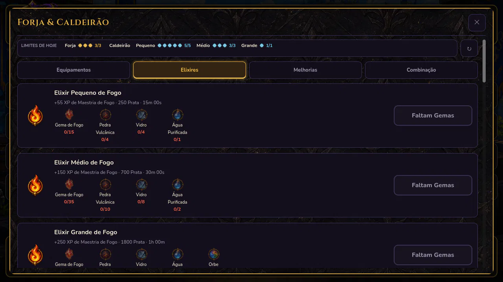
CaldeirãoPrepare Elixires com Gemas Elementais e Água Purificada para fortalecer sua Maestria.
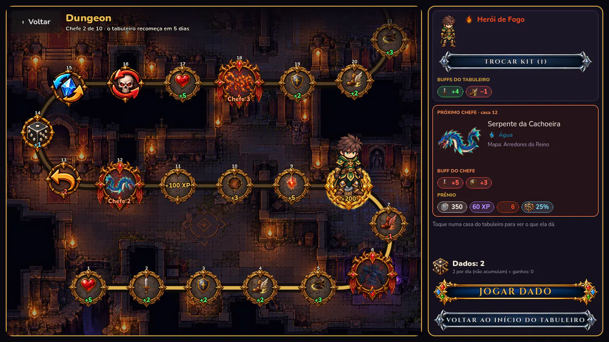
Novo modoUm tabuleiro de 60 casas: jogue os dados, colete buffs, desvie das armadilhas e vença os Chefes.
Escolha seu herói
A Classe é escolhida uma vez e define quem você é em batalha. Cada uma tem seus pontos fortes e um ponto fraco que pede estratégia.

Sobrevivência
Maior Vida e Defesa do jogo; sacrifica mobilidade para cumprir o papel de linha de frente.

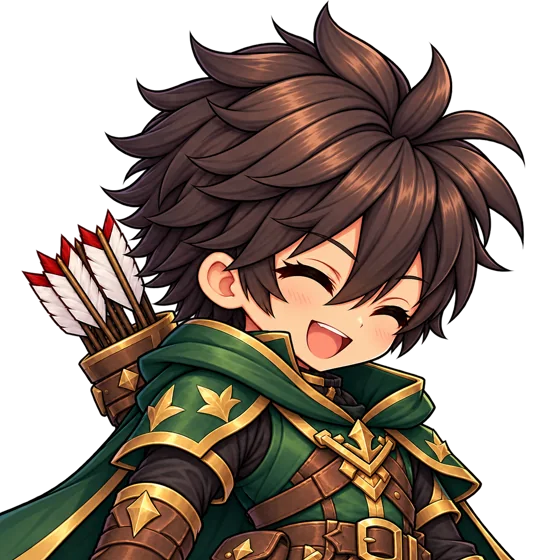
Iniciativa e precisão
Classe mais veloz do jogo, com a maior Precisão; baixa Defesa exige posicionamento e estratégia.

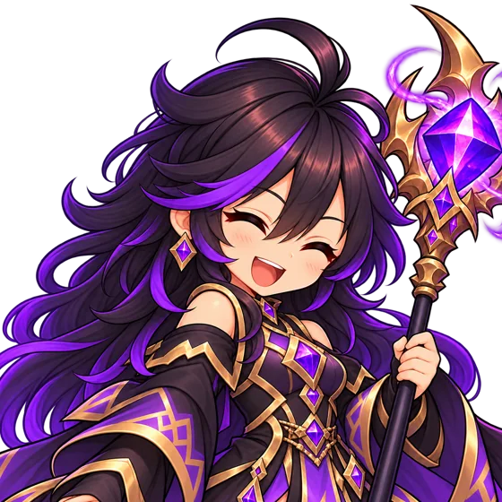
Dano bruto
Maior potencial ofensivo entre todas as Classes; Vida acima da média compensa a Defesa limitada.
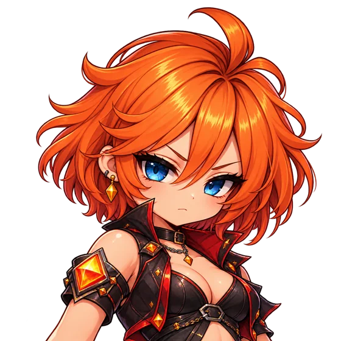
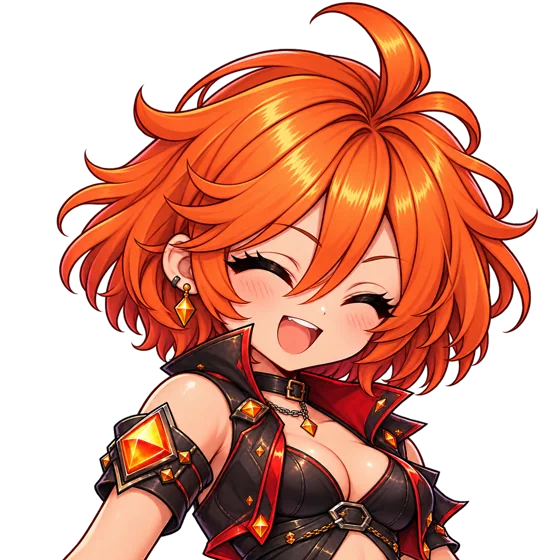
Evasão
A Classe mais difícil de atingir, com velocidade e esquiva; baixo Ataque e Defesa a tornam vulnerável quando acertada.
A decisão de cada batalha
Antes de lutar, você escolhe o Elemento do herói. Cada um vence outro, e cada terreno favorece alguns deles. Olhar o inimigo e escolher bem é metade da vitória.

Pressão ofensiva crescente.
Vence o Gelo
O mestre do controle do campo de batalha.
Vence a Natureza

Evolução constante, adaptação e persistência: vence por desgaste contínuo.
Vence a Terra

Uma fortaleza inabalável que controla a linha de frente e transforma resistência em vantagem.
Vence o Raio

Velocidade, precisão e domínio do ritmo: ataca antes dos adversários.
Vence a Água

O mestre das marés prolonga o combate até assumir o controle total.
Vence o Fogo

Com vantagemSeus golpes causam +50% de dano.
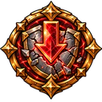
Com desvantagemSeus golpes causam −50% de dano.
Para cada Elemento, escolha 2 Passivas e 3 Ativas, incluindo Ultimates. Em batalha, o combate corre em tempo real e você decide a hora de cada habilidade. Lutar com um Elemento também aumenta a sua Maestria nele.
Os reinos de Entherya
Todo mapa favorece dois Elementos: quem luta com eles causa +10% de dano e tem +2% de chance de aplicar o efeito especial. Antes de entrar, o jogo mostra os dois Elementos do terreno e os do inimigo.
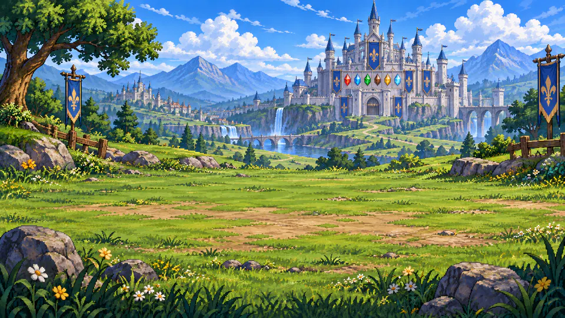
Terra Natureza
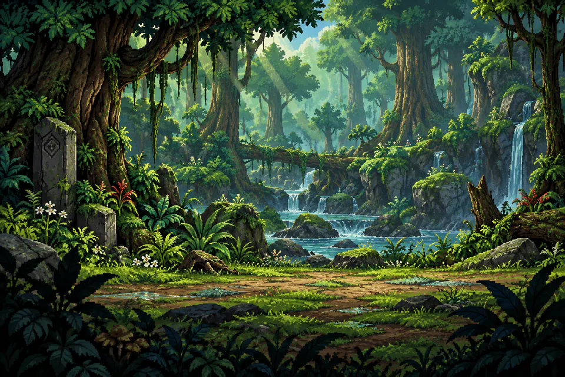
Natureza Água
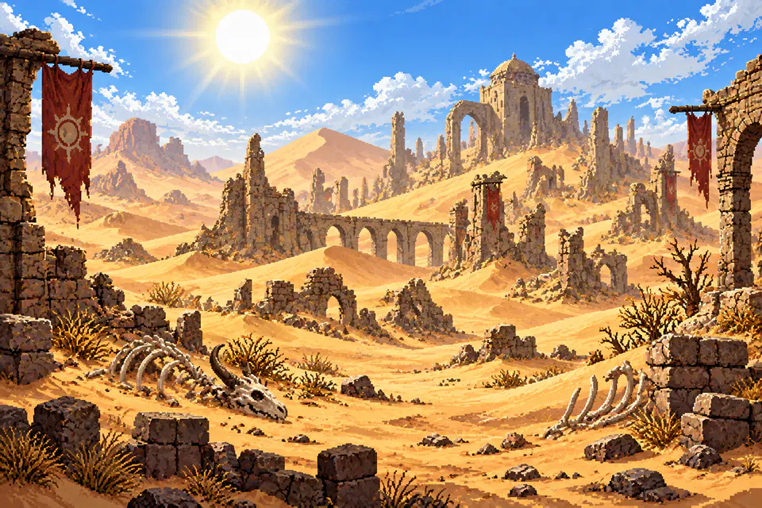
Terra Fogo
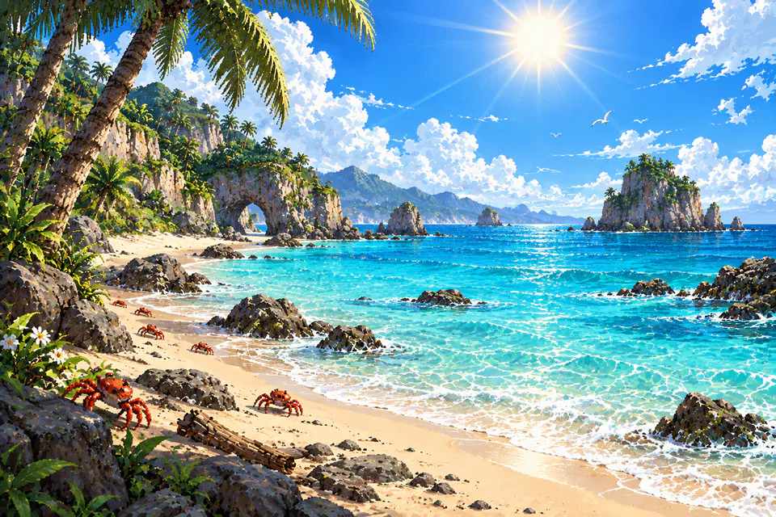
Água Fogo
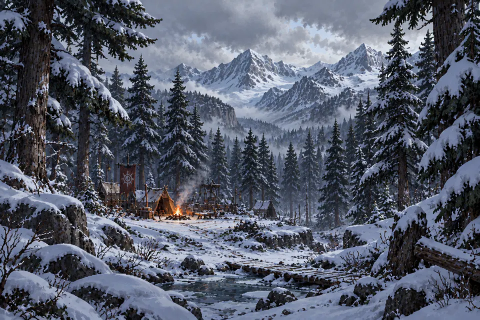
Gelo Terra

Raio Fogo
Terra Raio
Para onde ir

Os tremores vêm de uma mina abandonada, onde o metal magnetizado faz as pedras flutuarem. Raios, magma e uma tempestade magnética separam os heróis do Guardião do Núcleo Terrestre, corrompido pela energia da Arca Primordial.
5 etapas, muitas falas novas dos heróis e um desafio de verdade no fim.
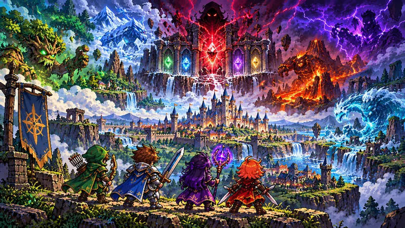
Três Capítulos com cinco etapas cada, dos Arredores do Reino até o fundo da Mina. Cada etapa é uma sequência de lutas que termina num Chefe, com falas de cada herói pelo caminho.
Prêmio especial na primeira vez que conclui cada etapa.
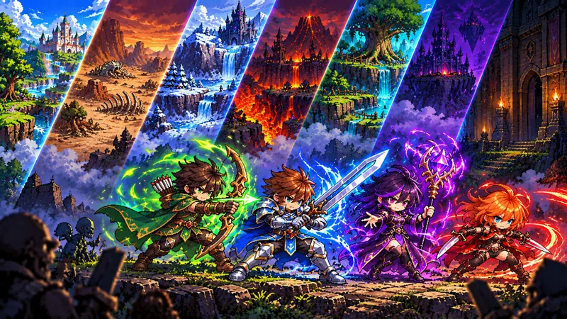
Uma jornada diferente a cada vez: o jogo sorteia o terreno e monstros que são fortes nele. São 5 lutas seguidas, cada uma mais difícil, e a última é contra um Chefe.
Ótima para juntar materiais e Gemas de Elementos variados.

Suba andar por andar. Cada andar é uma única luta, difícil desde o começo. A cada 15 dias a Torre recomeça, com andares e prêmios novos.
Os andares mais altos dão os equipamentos mais raros.
Um tabuleiro de 60 casas. Jogue os dados todo dia e avance: há casas de buff, armadilhas, prêmios e dados extras, e a cada trecho um Chefe barra o caminho. O tabuleiro recomeça toda semana.
Os buffs que você junta valem até o fim do tabuleiro.
Grimório
São 61 criaturas, e cada uma tem sua própria história. No Grimório, os monstros que você ainda não enfrentou aparecem só como sombra, sem nome nem recompensa. Para preencher o Bestiário, só lutando.
Toque numa sombra abaixo para revelá-la.
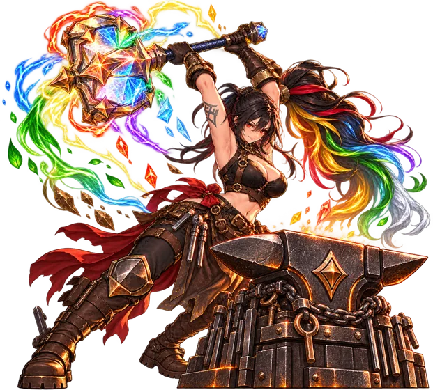
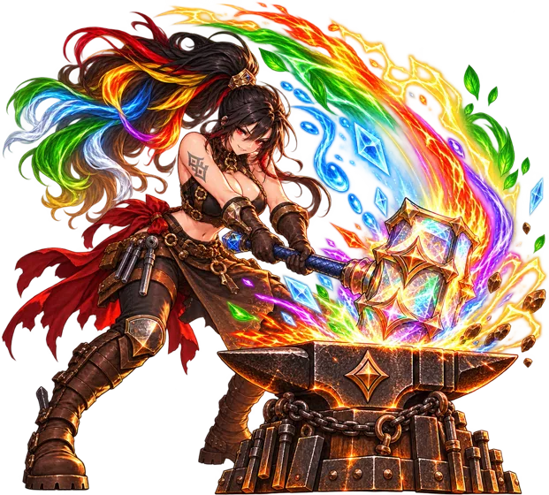


Yelena, a ferreira
Entre uma batalha e outra

Missões novas todo dia e Conquistas para guardar de lembrança.

Junte as chaves das missões diárias e abra o Baú.

Venda e compre equipamentos de outros jogadores com Prata.

Seu herói continua juntando recompensas enquanto você está fora.

Dispute o maior Nível e a maior Maestria em cada Elemento.
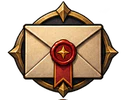
Prêmios, avisos e as novidades de cada atualização chegam aqui.

Entre com o Google e seu progresso fica salvo, em qualquer aparelho.
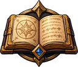
Jogue no idioma que preferir e troque quando quiser nas Configurações.
Gameplay
A Maga escolhe o Modo História, o Elemento e as habilidades, e enfrenta a primeira jornada até o Chefe.
Disponível em português e inglês. Siga @elementalknights no Instagram para acompanhar as novidades.
Dúvidas, sugestões ou problemas na conta: irontyro.games@gmail.com